Your people are far away
Moving countries taught me this the hard way. Building friendships from scratch abroad is genuinely hard, and most of us don't talk about how lonely it gets.
Stay on track. Get back on track. Or finally start. We put ourselves last and nobody asks how we’re doing. So I built a place that does. A heart to heart with women like you.
Only 20 founding spots · First month free when you claim yours
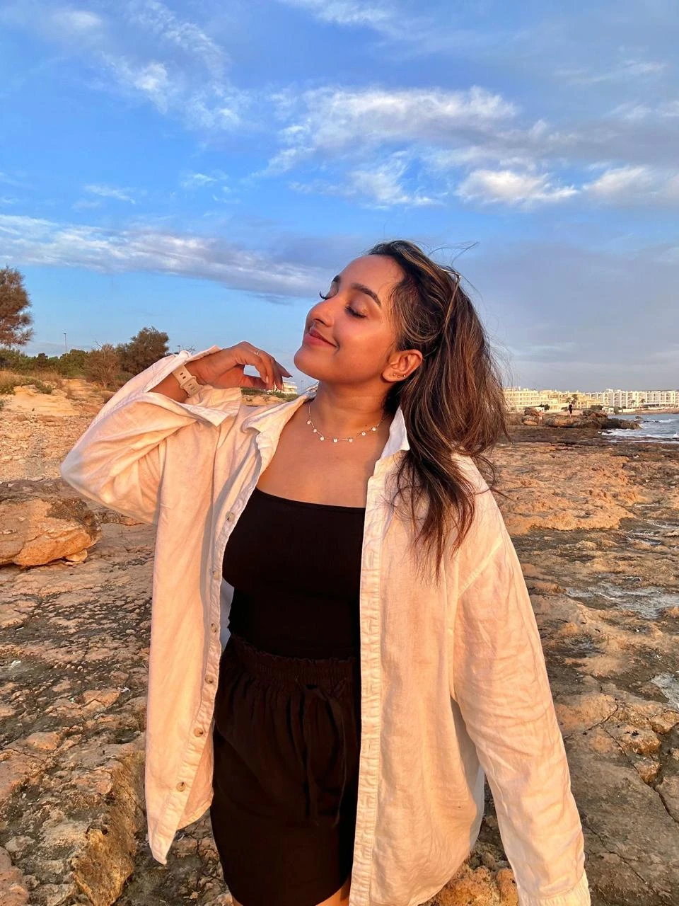
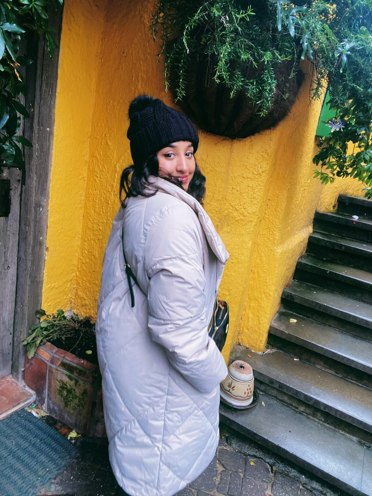
Be honest. Nobody's watching and nothing gets saved. Tap any that sound like you.
Me too. It doesn't mean you lack willpower. It means you've been doing it alone, on motivation alone.
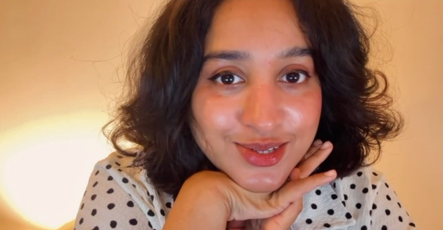
Most of us quit in week two. Not because we're lazy, but because life gets loud. With Rebloom you never start from zero.
Day 9. If you've wobbled, hello.
Missed a few days? Welcome back. You haven't failed. You're still here.
Today, just do the 2-minute version of one petal. It counts the same as a perfect day.
What one WhatsApp group did for my gym habit, the Club can do for the rest of your life. A small pod of women, a photo or voice note when you show up, and a live Sunday reset with me. Say what you're struggling with. No one here will judge you.
Plus one buddy who sends a kind message if you go quiet for two days.
you pick three. your pod and your buddy cheer you on x
Sweaty Faces was a WhatsApp group of friends and family. One rule: post a photo every time you work out.
"It's been one year since I joined Sweaty Faces, definitely the most consistent I've ever been."
"It's really easy to lose track of doing the good things, so when I see that by the end of the month I'm hitting my workouts, it's been great to see, reflect on and be grateful for."
A beta tester's Day 30 in one sentence.
Go at your own pace, privately.
For when you go further with people beside you.
20 founding spots
Founding members get the first month free and the Kit for £15.
If you've got that, hold onto it. Rebloom is for the rest of us. I built it for me first, because I realised I needed connection, a bit of girlhood, and the push that only comes from a group. I've been every one of these.
Moving countries taught me this the hard way. Building friendships from scratch abroad is genuinely hard, and most of us don't talk about how lonely it gets.
They love you. They're also busy, or in a different season of life, and they don't quite get why the small stuff feels so big right now.
It's easier to say "I fell off again" to someone who's struggled with the same thing, and who has no history of watching you start over.
Sweaty Faces worked because it had a ritual: one photo, every time you showed up. Most friend chats are lovely, but nobody's checking in on Day 12.
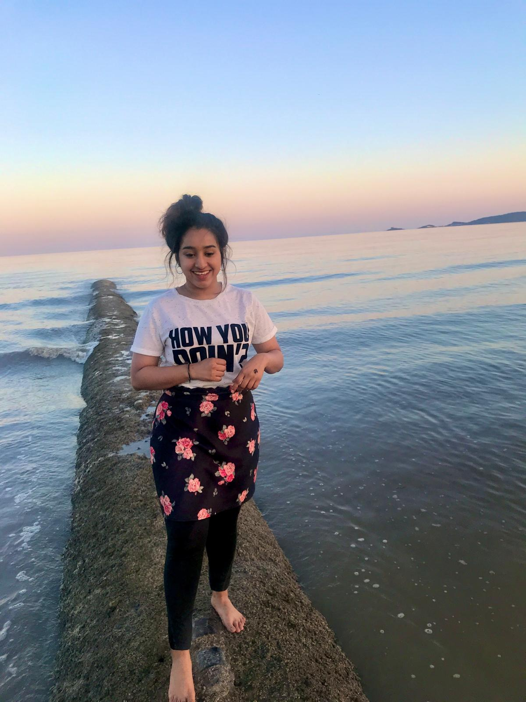
Mine used to be brutal. One missed gym day and it was "see, you always do this." I could hear it. I just never argued back.
Over the 30 days you'll start noticing the scripts that keep you stuck, catch them in the moment, and practise a fairer reply. Not toxic positivity. Just the truth, said kindly.
What it gives youYour own short list of kinder lines, written down before you need them, for the days you want to quit.
I've only ever been consistent when someone was watching. Not because of pressure, but because someone noticed. Sweaty Faces taught me that.
In the Club, your pod is 4 to 6 women on the same 30 days. You share a photo or a voice note when you show up, and someone notices when you go quiet. Nobody's ahead. Nobody's judging. Going solo with the Kit? Rope in one friend. One person noticing is enough.
What it gives youPeople who say "that counts" on the days you can't say it to yourself.
I spent years living in "next month." Next month I'll start properly. Next month I'll have more time. It never came.
Rebloom shrinks it down to today: three small things, a 2-minute version for the hard days, and no streaks to break. Miss a day and you don't start over. You just come back.
What it gives youA way to keep going that doesn't wait for motivation, one ordinary day at a time.
Ever notice how one thought turns into ten? "I haven't been eating well" becomes "and I haven't been to the gym, and I still haven't finished that book." Round and round, and nowhere.
So the first step is getting it all out of your head. Pick your three petals and answer three gentle questions for each, in a journal, your notes app or a voice memo. Ten minutes. Messy is fine.
Like AI? Paste your answers into ChatGPT or Claude and ask it to turn them into a simple plan. That's how I do it. It's optional, it never needs anything personal, and it doesn't give advice. Everything after that is about people.
Ten minutes with the questions, written or spoken.
Three clear intentions, in your own words.
A board on your lock screen that reminds you why.
Five minutes a day, with 2-minute versions for busy days.
Notice what's changed, then rebloom next season.
Focus beats fixing everything at once. Tap a petal.
Mental health and calm
No names, no health details, no money. Just how things feel, and where you'd like them to go.
Food and movement are always about how you feel. Never calories, weight or body shape.
Small enough to do on your worst day. That's the whole point.
Honestly? Habits take most people longer than 30 days to feel automatic. So 30 days isn't the finish line. It's your first season, and you come back for the next one.
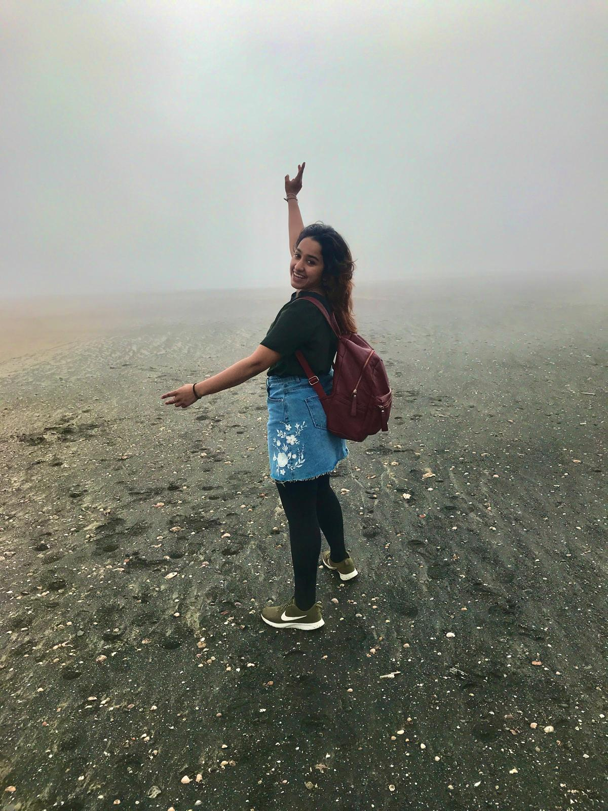
20 minutes, tonight
Start tiny
The messy middle. Built for it.
Stretch one habit
Notice the change
Begin again, wiser
These are the kind of questions you'll answer with me. Grab a notebook, your notes app or a voice memo. Two words is enough. Messy is the point.
Missed a check-in? Skip it. Just answer today's. Nes x
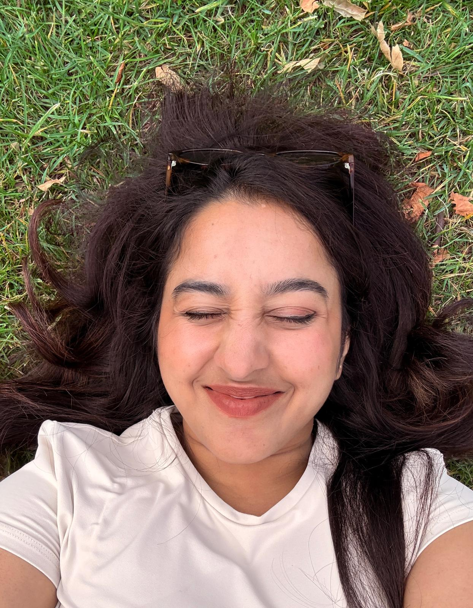
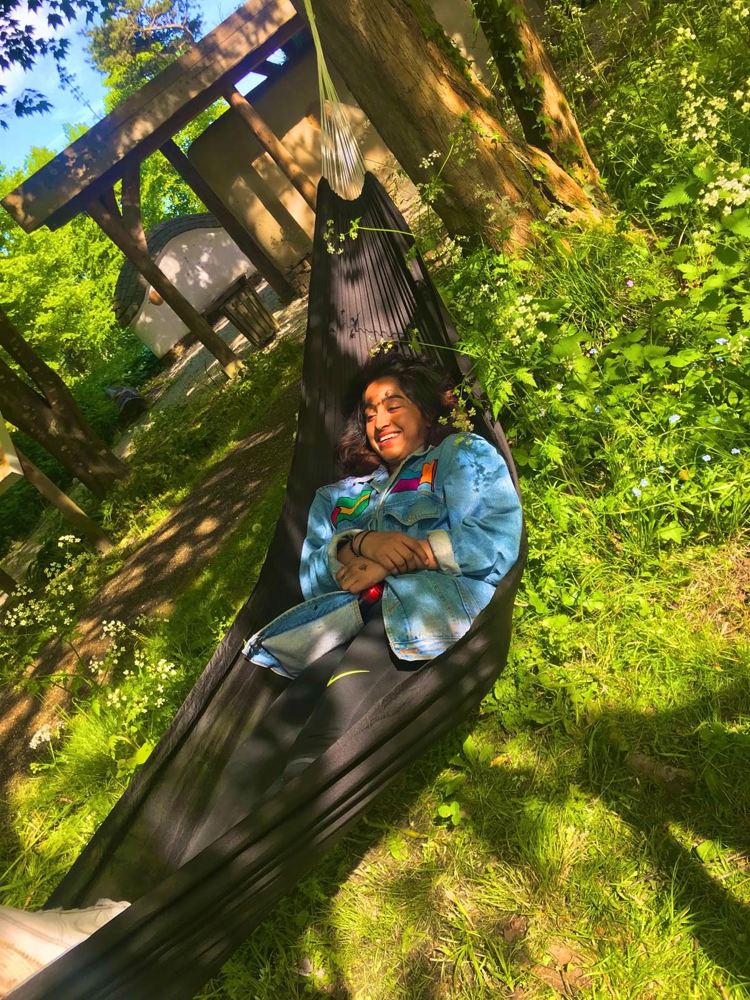
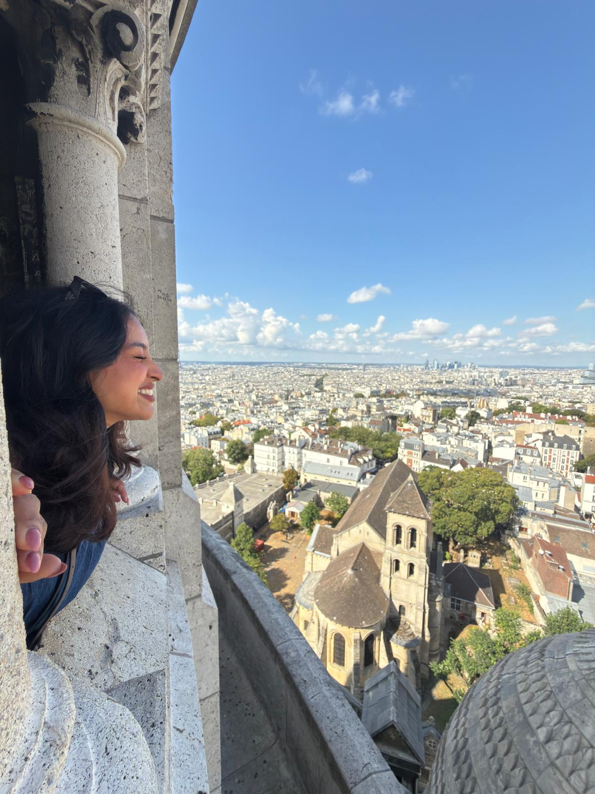
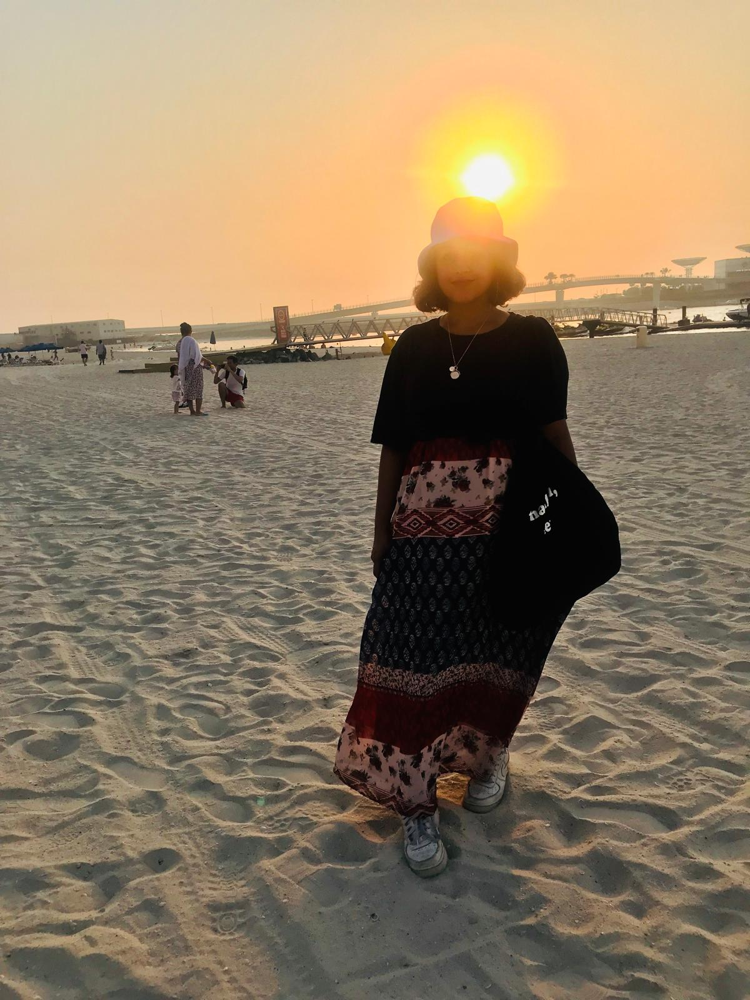
Can I be honest with you?
I grew up with big self-esteem issues, and I was a massive procrastinator. A lot of that goes back to my childhood and the environment I grew up in. I'd be on track for three months, then fall off, then spend weeks beating myself up. Maybe you know that loop too.
Then work happened. I built a career in corporate, and everything else quietly took a back seat. Somewhere along the way I stopped feeling comfortable in my own skin, and in my own life. I wasn't really living it. I was procrastinating through it. So much of my life happened in my head, not out in the world.
Here's what I didn't see for years. Every time I didn't stick with something, my brain kept the receipt. So when I started again, it already "knew" how it would end. I carried invisible scripts about who I was, what I could do and what I couldn't. Some days I was even scared of it going well. I could hear that voice. I just never got round to arguing back.
It took me a long time to learn those scripts weren't true. They were just old. Nothing's too late. You can come back.
I haven't done any of this alone. My husband, Jordan, has been my rock through all of it, the wobbles and the fresh starts included. He's the reason I know how much it changes things to have someone in your corner. I want you to have that too.
So I built Rebloom for you, and for me. Accountability and support that doesn't cost the earth. A safe space where no one judges where you're starting from. And me, right there with you, sharing what's actually working as I go.
I'm an August Leo. Sunflowers, sunny energy, that's always felt like me. There's been a little flower next to my name on WhatsApp for as long as I can remember, and "blooming" has always been in my bio. That's my state of mind. I'm blooming wherever I am, and whoever I'm with.
But over the past couple of years, I haven't always felt like that. Some days the word sat there in my bio and I felt like I was faking it. Like I was holding up a version of me I couldn't quite reach anymore.
What I've realised is that nobody stays in bloom forever. Not flowers, not people. There will be ups and downs, good seasons and quiet ones. That doesn't make the blooming fake. It just means you have to come back to it.
That's where the name comes from. Not blooming. Reblooming. Choosing it again, every day, especially on the days you don't feel it.
Every morning you wake up, you get another go. So do I.
Turns out I was relying on motivation, and motivation comes and goes.
Then a few friends and cousins started a WhatsApp group called Sweaty Faces. For the first time in my life, I didn't fall off. Not because I found willpower, but because I wasn't doing it alone. I want you to feel that about the rest of your life too.
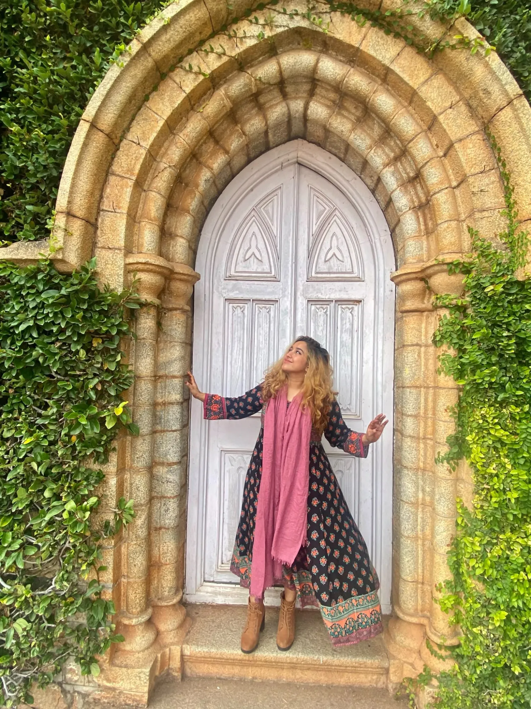
Moving countries and starting from scratch is isolating. Some days you feel low and can't say why. Here's how I found support without paying for it.
"Therapy isn't someone handing you a solution. It's someone helping you see your own thinking, and challenge it. A lot of what I believed about myself had no actual proof."
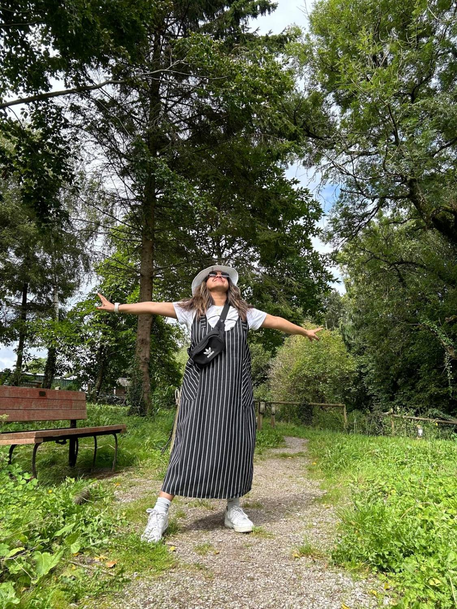
Many employers offer a few free counselling sessions through occupational health or an employee assistance line. I got about six this way.
The mental health charity. The wait was long, but I got free weekly sessions for three months. mind.org.uk
Talking therapies can often be accessed for free. Your GP is a good place to start. nhs.uk/mental-health
Rebloom isn't therapy and doesn't replace it. If you're struggling right now, Samaritans are free, any time, on 116 123.
Not sure if Rebloom is for you? Want to share where you're at? I read every message myself. No sales pitch.
No. A journal, your notes app or a voice memo works just as well. AI is an optional shortcut if you like it. What Rebloom gives you is the questions, the path, a daily nudge and people who notice when you go quiet.
You don't need to be. Messy notes count, bullet points count, and voice notes to yourself count too. Nobody reads your answers but you.
The questions never ask for names, health details or money. You write about routines and how things feel, not people. If you do use AI, you can use a temporary chat.
Me too. Rebloom isn't built for people who never fall off. It's built for coming back: a smaller version for hard days, people who notice when you go quiet, and a fresh start every morning.
No. Rebloom is for reflection, small habits and doing it together. It isn't therapy or medical advice. Therapy helped me a lot, and I've shared how I found it for free in the UK on my story page.
You rejoin. Go to today's page, do the 2-minute version of one petal, read your letter. Your 30 days can take 40.
Never. Food and movement are about how you feel. No calories, weigh-ins or body goals.
Five minutes a day. Your words. Your season.
Only 20 founding spots · First month free when you claim yours
For anyone who's started strong and quietly disappeared on themselves. Pop your email in and I'll send my mini-guide, 5 questions to find your bloom.
One minute. I read every one, then we'll have a 15-minute call.
I'll be in touch within a few days for our 15-minute call. Not an interview, just a chat. Your mini-guide is on its way.
Nes x